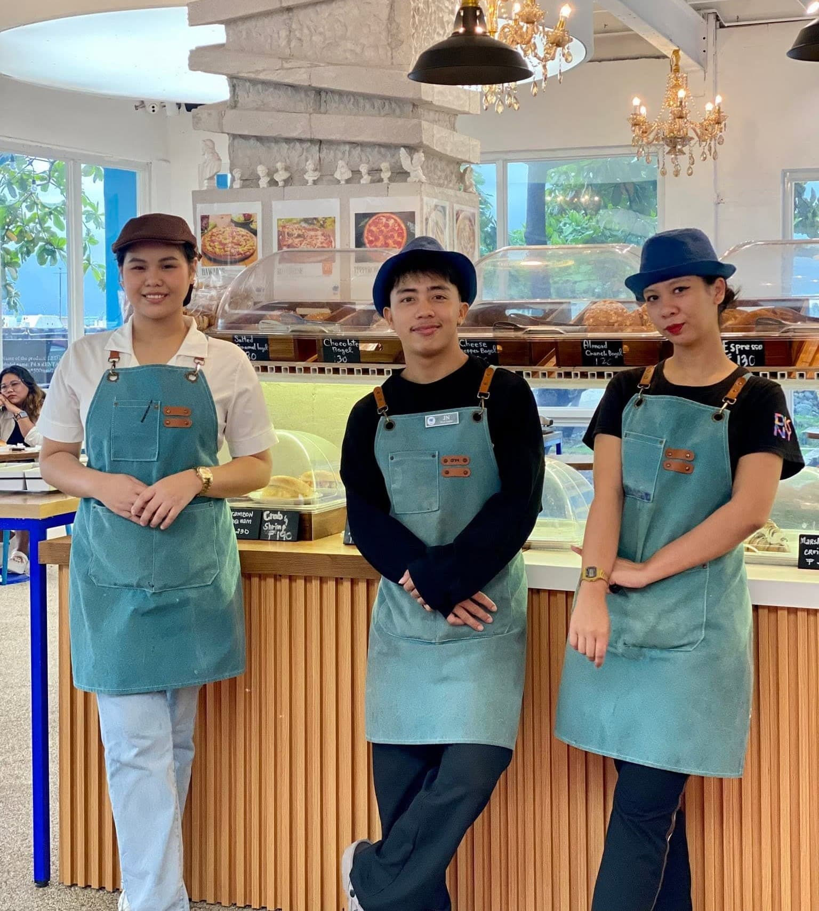

Who Are We?
Our Story Along the Bay

Our story as Cafe Blu began in February 2025 in Subic Bay Freeport Zone with a mission to bring together authentic Korean baked goods, well-roasted coffees, and comforting meals in a relaxed seaside setting.
Along 244 Waterfront Road, we have grown into a 24/7 coastal bakery and cafe known for freshly baked Korean pastries, hearty pastas and pizzas, and handcrafted drinks served in generous portions.
Whether you drop by for a quiet morning pastry or a late-night coffee run by the sea, Cafe Blu continues to welcome every guest with one simple promise: “We serve you happiness.”